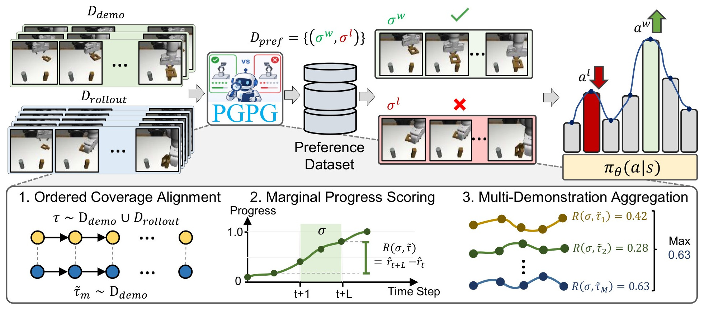

Rollouts are cheap, preference labels are not. A few demonstrations can do the labeling.
Diffusion and flow-matching policies can learn to imitate experts well, but their performance is limited by the small number of available expert demonstrations. Preference-based fine-tuning can instead learn from the policy’s own imperfect rollouts. However, it still needs someone to judge which part of a rollout is better, and collecting these human preferences is expensive.
Progress-Guided Preference Generation (PGPG) removes the need for human feedback. It measures how far each state of a rollout has progressed through the task, in the same order as a small set of expert demonstrations, and turns the progress made within a segment into automatically generated preference labels that teach the policy which behaviors are better. This avoids both manual labeling and the need to design a reward function. PGPG outperforms supervised fine-tuning baselines on five Robomimic tasks, from simple pick-and-place to precise insertion, with both diffusion and flow-matching policies. It also fine-tunes GR00T N1.7, a 3B vision-language-action (VLA) model, on LIBERO-10.
Inside one preference label: coverage, margin, max
Ordered Coverage Alignment
ORCA scores a trajectory against an expert demonstration by the probability that it has covered the demonstration's subgoals in order. It is indifferent to execution speed, it gives no credit for skipping ahead, and covered subgoals stay covered, so the score is a running measure of progress rather than a per-step reward.
Marginal Progress Scoring
Summing a cumulative score over a segment counts earlier progress again at every step. PGPG scores a segment by the progress made inside it, which telescopes to rt+L − rt, and drops pairs whose scores differ by less than εσ.
Multi-Demonstration Aggregation
A rollout may solve the task in a different but equally valid way. PGPG scores each segment against M reference demonstrations and keeps the max, so a segment earns credit for matching any expert mode, even when the rollout switches modes along the way.
- pick references {τ̃m} ⊂ Ddemo, D ← Ddemo ∪ Drollout
- score every τ ∈ D with ORCA against each τ̃m ▷ Eq. 2
- for i = 1 … N do
- sample segments (σ1, σ2) ~ D̂
- R(σ) ← maxm r̂t+L − r̂t for both ▷ Eq. 4, 6
- if |R(σ1) − R(σ2)| > εσ then
- Dpref ← Dpref ∪ {(σw, σl)} ▷ Eq. 5
- fine-tune πθ on Dpref with CPL ▷ Eq. 1
Contrastive preference learning on the generated pairs
The labeled pairs fine-tune the pretrained policy with CPL, which raises the likelihood of the preferred segment relative to the reference policy and lowers that of the rejected one, without a reward model. For a diffusion policy the log-likelihood ratio becomes a difference in noise-prediction error against the reference policy; for a flow policy, a difference in velocity-prediction error.


Five manipulation tasks, two kinds of generative policy
Each pretrained policy starts at about 40% success and collects 500 rollouts. PGPG labels segments of these rollouts and of about 120 retained demonstrations (80 for ToolHang), with 10 to 40 demonstrations as references, then fine-tunes with CPL. All policies act from low-dimensional states; only PGPG's labeler looks at camera images. Baselines marked † use privileged information. Success rate over 50 episodes and three seeds.
Full results with standard deviations
PGPG has the best average with both policy classes. Where the benchmark has dense rewards (Lift, Can, Square) it matches the reward-labeled CPLKL, except on Square with the flow policy. On the sparse-reward Transport and ToolHang it beats CPLKL by 12.7 to 26.7 points: a sparse reward gives most segment pairs nearly the same score, while progress still tells them apart.
Other ways to make the labels
Same pipeline and fine-tuning; only the source of the labels changes. CLIP (per frame) and S3D (per clip) score how well the observations match the task description, and Robometer is a learned progress reward model. None of them checks that subgoals are completed in order.
The cost of a progress label
Average wall-clock time to compute the progress rewards of one trajectory, over 50 rollouts. ORCA is a lightweight dynamic program over R3M features; a progress reward model runs heavy network inference on every rollout.
And the labels are better: averaged over the five tasks, fine-tuning on Robometer labels reaches 44.7% success, on PGPG labels 74.5%.
Full comparison of label sources, per task
Beyond single-task policies: GR00T N1.7 on LIBERO-10
Preferences are generated per task against that task's own demonstrations, then pooled into one fine-tuning run, with no task-specific models or hyperparameters.
A vision-language backbone conditions a flow-matching action head. PGPG only needs that head's flow-matching loss in place of the log-likelihood, so nothing in the architecture changes.
Compared with about 120 demonstrations and 500 rollouts per task on Robomimic.
PGPG raises the average success from 50.5% to 72.1%, against 64.8% for Filtered BC, and is best on seven of the ten tasks, with the largest gains on T1 (18.0 → 64.7), T8 (40.0 → 84.0) and T2 (58.0 → 94.7). Filtered BC, which relies on the simulator's success signal to select rollouts, is better on T5 and T6. Neither method solves T9, where none of the 20 rollouts of the pretrained policy succeeded.
Labels: ORCA on R3M features of the third-person camera, 160-step segments, 5,000 demo-vs-rollout and 5,000 rollout-vs-rollout queries per task, 47,878 pairs kept. Only the action head is fine-tuned, with CPLKL. Success over 50 episodes per task and three seeds.
What makes the labels work
Marginal scoring needs ordered coverage
Labels from three sequence-matching metrics, each with its raw cumulative score or with marginal progress scoring (MPS). MPS gives large, consistent gains only on top of ORCA, whose score grows with the number of subgoals covered in order.
Accurate labels or many labels
Lift, diffusion policy. A larger threshold εσ drops ambiguous pairs: label accuracy against ground-truth preferences rises while fewer pairs remain. Policy success peaks at εσ = 0.6 and collapses at 0.95.
How many reference demonstrations?
Number of expert demonstrations used to generate the labels. Success rises quickly from 1 to 10 and saturates after 10 to 20.
More ablations
- PGPG relies on the robustness of the pretrained visual encoder that the progress is computed on.
- Visual sequence matching can be misled under heavy occlusion; richer sensing such as depth or touch could help.
- Marginal progress scoring assumes largely monotonic progress, so long-horizon tasks that need deliberate backtracking may be scored poorly.
BibTeX
@inproceedings{luu2026pgpg,
title = {Progress-Guided Preference Generation for Aligning Generative Control Policies},
author = {Luu, Tung M. and Ton, Tri and Nguyen, Duc M. and Nguyen, Xuan Thanh and
Nguyen, Gia Binh and Nguyen, Quang Tan and Duong, Vu and Sonntag, Daniel and
Nguyen, Duy M. H. and Ngo, Vien Anh and Yoo, Chang D.},
booktitle = {Conference on Robot Learning (CoRL)},
year = {2026}
}